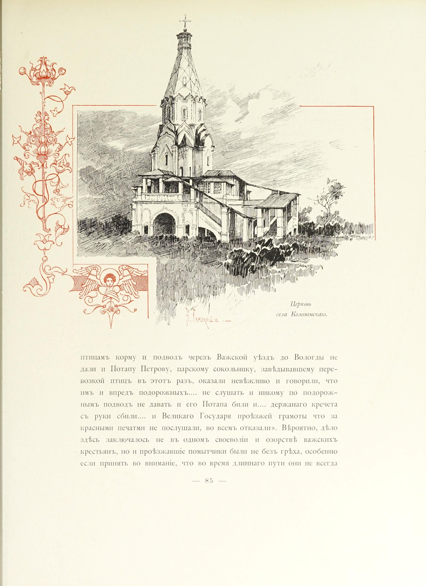
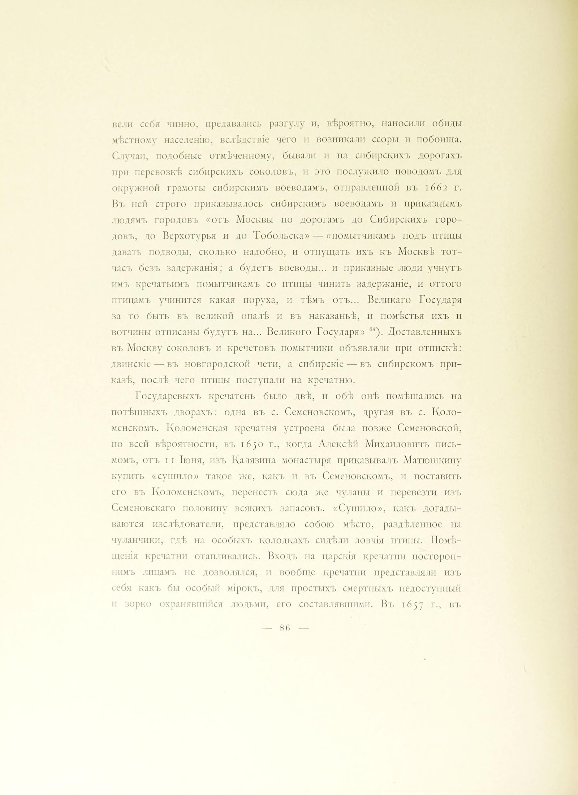

Церковь
села Коломенскаго.
птицамъ корму и подводъ черезъ Важской уѣздъ до Вологды не
дали и Потапу Петрову, царскому сокольнику, завѣдывавшему пере-возкой птицъ въ этотъ разъ, оказали невѣжливо и говорили, что
имъ и впредъ подорожныхъ.... не слушать и никому по подорож-нымъ подводъ не давать и его Потапа били и.... держанаго кречета
съ руки сбили.... и Великаго Государя проѣзжей грамоты что за
красными печатми не послушали, во всемъ отказали». Вѣроятно, дѣло
здѣсь заключалось не въ одномъ своеволіи и озорствѣ важскихъ
крестьянъ, но и проѣзжавшіе помытчики были не безъ грѣха, особенно
если принять во вниманіе, что во время длиннаго пути они не всегда
— 85 —

вели себя чинно, предавались разгулу и, вѣроятно, наносили обиды
мѣстному населенію, вслѣдствіе чего и возникали ссоры и побоища.
Случаи, подобные отмѣченному, бывали и на сибирскихъ дорогахъ
при перевозкѣ сибирскихъ соколовъ, и это послужило поводомъ для
окружной грамоты сибирскимъ воеводамъ, отправленной въ 1662 г.
Въ ней строго приказывалось сибирскимъ воеводамъ и приказнымъ
людямъ городовъ «отъ Москвы по дорогамъ до Сибирскихъ горо-довъ, до Верхотурья и до Тобольска» — «помытчикамъ подъ птицы
давать подводы, сколько надобно, и отпущать ихъ къ Москвѣ тот-часъ безъ задержанія; а будетъ воеводы... и приказные люди учнутъ
имъ кречатьимъ помытчикамъ со птицы чинить задержаніе, и оттого
птицамъ учинится какая поруха, и тѣмъ отъ... Великаго Государя
за то быть въ великой опалѣ и въ наказаньѣ, и помѣстья ихъ и
вотчины отписаны будутъ на... Великого Государя» 84). Доставленныхъ
въ Москву соколовъ и кречетовъ помытчики объявляли при отпискѣ:
двинскіе — въ новгородской чети, а сибирскіе — въ сибирскомъ при-казѣ, послѣ чего птицы поступали на кречатню.
Государевыхъ кречатень было двѣ, и обѣ онѣ помѣщались на
потѣшныхъ дворахъ: одна въ с. Семеновскомъ, другая въ с. Коло-менскомъ. Коломенская кречатня устроена была позже Семеновской,
по всей вѣроятности, въ 1650 г., когда Алексѣй Михаиловичъ пись-момъ, отъ 11 Іюня, изъ Калязина монастыря приказывалъ Матюшкину
купить «сушило» такое же, какъ и въ Семеновскомъ, и поставить
его въ Коломенскомъ, перенесть сюда же чуланы и перевезти изъ
Семеновскаго половину всякихъ запасовъ. «Сушило», какъ догады-ваются изслѣдователи, представляло собою мѣсто, раздѣленное на
чуланчики, гдѣ на особыхъ колодкахъ сидѣли ловчія птицы. Помѣ-щенія кречатни отапливались. Входъ на царскія кречатни посторон-нимъ лицамъ не дозволялся, и вообще кречатни представляли изъ
себя какъ бы особый мірокъ, для простыхъ смертныхъ недоступный
и зорко охранявшійся людьми, его составлявшими. Въ 1657 г., въ
— 86 —